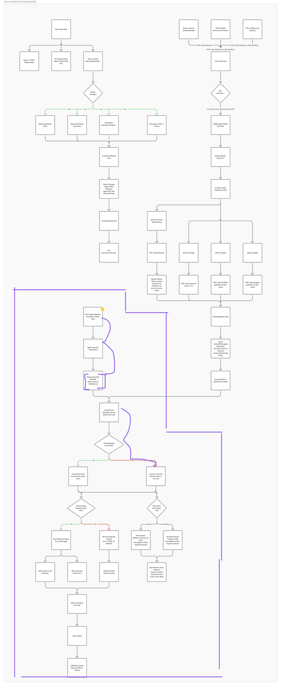
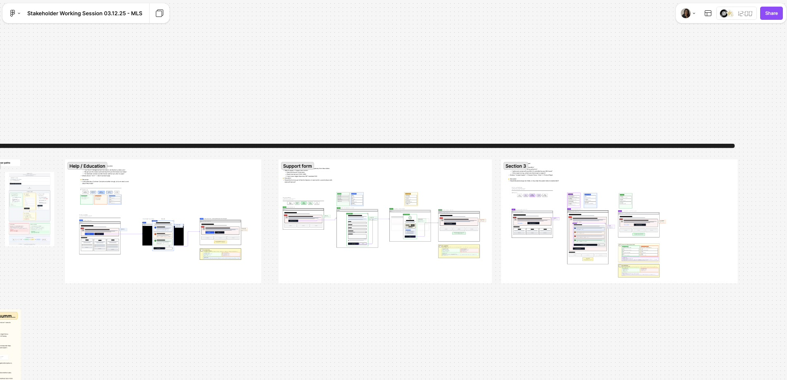
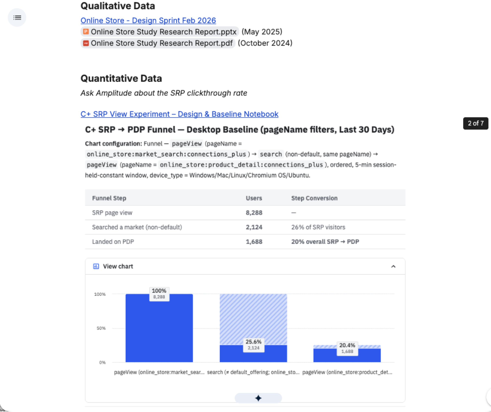
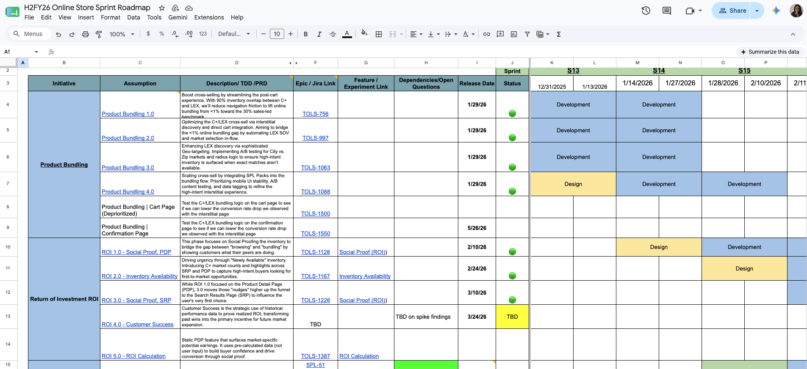

How I directed the work
The UX Designer on SPL came to our first review with six pricing layout variations. They were not wrong, but none of them had a clear point of view. I redirected: pick one direction, make the argument for it, come back with three reasons why this layout serves an agent comparing tiers for the first time. That feedback loop, not just reviewing screens but building judgment, became the standard for every review that followed. By the end of the project, they were presenting decisions, not options.
SPL · SOV Model

SPL · Unauthenticated version

Design decision
The pack pricing (3 / 6 / 12 promotions) needed to clearly show savings tiers without overwhelming agents comparing options. I directed the layout to default-select the 6-pack (highest value per unit) with inline savings callouts nudging toward the middle option used by most power users.
Post-checkout confirmation · Desktop + Mobile

Confirmation page · Original state before Promote Now iteration

After Purchase: My Products
What agents see once they own a Spotlight Listings pack
The purchase is only the beginning. Once an agent has bought a pack, they land in the My Products section, where they manage their active subscriptions, renewals, and promotion status across every product they own. I designed these states to give agents full visibility and control without needing to contact support.
Active subscription · Web and mWeb responsive states with SPL pack details

Opportunity Identified: Promote Now CTA
The confirmation page was a dead end. I proposed a fix.
After purchase, agents landed on a generic confirmation page with no path forward. We knew they had listings that needed promoting, but the store just showed a receipt and a close button. I identified this as a time-to-value problem: agents had just paid for Spotlight Listings but had no clear next step to actually use them.
Before · Confirmation page with no promotion path, just a receipt and a close button
Opportunity
Once a user purchases a pack of SPL, their journey ends on the confirmation page with no way to act on their purchase. We believe that adding a "Promote Now" CTA directly on the confirmation page will decrease time-to-value, reduce the gap between purchase intent and first promotion, and increase engagement with the ProDashboard immediately after checkout.
Proposed · "Promote Now" CTA on confirmation page, redirecting agents to ProDashboard to promote their listings

From Iterations to Experiment
The design process didn't just improve screens. It sequenced the team's learning.
Each iteration had a specific job. Not "make it better" in general, but reduce a specific type of uncertainty: first scope, then flow, then post-purchase friction, then relevance. By the time we reached Phase 6, the design had already done the work needed to make a well-formed experiment possible.
Iteration 1
Scope definition
Reduced scope intentionally. No Buy Now, no cross-sell yet.
First, validate SPL as a self-serve product inside Online Store. Trying to solve buy flow, cross-sell and post-purchase at once would have created noise without a baseline.
Made the cross-sell opportunity concrete and designable.
Buy Now, cross-sell placement, and confirmation page went from abstract ideas to a full purchasable flow. Without this, there was no treatment experience for an experiment to test.
Phase 3
Friction detection
Revealed that confirmation wasn't just missing a CTA. It was creating confusion.
Some agents were buying a la carte promotions in ProDashboard immediately after checkout because the copy implied instant availability, when tokens actually took 1 to 4 minutes to process. Copy, timing, and system state representation all matter for conversion.
Made the journey measurable. Buy Now, cross-sell and mWeb tracking enabled.
The design wasn't just producing a better experience, it was producing an observable one. That's the prerequisite for moving from iteration to experiment.
Evolved from generic cross-sell to a contextual, tiered offer.
The offer adapted to whether the agent had active unlisted properties, how many listings they had, and which tier to surface first as primary vs. fallback. Relevance, not just exposure.
Attach rate at 2%. Target: 5%. The next step was no longer another iteration.
With a well-defined treatment experience and a measurable funnel, the question shifted: is the offer actually driving incremental purchases, or just capturing agents who were already going to buy? That's an experiment question, not a design question. Phase 6 exists because the design already did the work to make it answerable.
The takeaway
The design iterations were effective because they transformed a broad cross-sell idea into a concrete, contextual, and measurable proposal. And precisely because the design had matured enough, the logical next step shifted from "keep iterating" to "validate causally with an A/B test."
What was delivered
- Authenticated product page with 3-tier pack pricing (3, 6, 12 promotions)
- Unauthenticated / public view with phone fallback CTA for unauthenticated agents
- 3-step mWeb journey: product card, PDP, configure drawer
- Post-checkout confirmation with "How to use your promotion" guide
- My Products and active subscription states (web + mWeb)
- "Promote Now" CTA proposal to reduce time-to-value post-purchase
- Contextual tiered cross-sell offer based on agent's active listings (Phase 5)
- Full funnel tracking: Buy Now, cross-sell, mWeb (Phase 4)
- SPL Guest Checkout (shipped May 19, 2026) enabling purchase without login
- Direction of UX Designer throughout all phases
The hidden complexity
MLS license status is managed by external MLS boards not by Realtor.com. The platform receives a boolean from CDH (Customer Data Hub) via Roster.mart integration. The design had to handle: inactive status (valid but lapsed, may reactivate) vs. non-existent (never registered), while never implying the platform could fix the underlying status.
Design Research & System Documentation
I mapped what no one on the tech team could explain
No one on the dev team could explain how MLS data flowed into the system they simply didn't know. So I took it upon myself to investigate: I dug through Confluence documentation, queried internal AI tools (Glean), mapped CDH, CPQ, and Roster.mart from scratch, and produced the first written documentation this team had of the full eligibility data flow. This became the foundation for every design decision in this project.
Research output
After 3 days of investigation across Confluence, Jira, and internal AI tools, I produced the first written documentation of the full MLS eligibility data flow this team had ever seen.
No ticket asked for this. No PM scoped it. I identified the knowledge gap, filled it myself, and made it available to the whole team. That documentation became the source of truth for every MLS-related design and engineering decision that followed.
Self-documented · MLS data architecture Roster.mart → CDH → CPQ → Online Store eligibility check

What this flow maps
1
Roster.mart
External MLS board data aggregator. Source of truth for agent license status.
2
CDH (Customer Data Hub)
Ingests Roster.mart data and surfaces a boolean: hasActiveMLS. This is what the Online Store reads.
3
CPQ (Configure Price Quote)
Receives the eligibility signal and gates purchase. If hasActiveMLS = false and requiresActiveMLS = true, the CTA is disabled.
4
Online Store UI
Where the design lives. Must represent the system state correctly without implying the platform can fix the underlying license status.
Why this mattered
No one on the dev team could explain this chain. I built this documentation from scratch so every design and engineering decision had a shared, accurate reference.
Research process · MLS system context CDH definition, Roster.mart role, and CPQ eligibility logic

The Problem State
What agents saw before: no designed error state
Agents with inactive MLS licenses landed on the SPL product page with no explanation of why they couldn't purchase. A generic "Active MLS Required" banner blocked them with no next step.
Before · SPL Product Page Inactive MLS state (no designed resolution path)

3-Path Self-Service Design
Three resolution paths for inactive MLS agents
Rather than one error state, I designed a branching flow based on what the agent needed to do next each path with a distinct CTA, rationale, and engineering cost.
Path 1, Learn More
Path 2, Contact Support Shipped
Path 3, Self-service Reactivation
Path 1
Learn More
CTA: "Why am I not eligible?"
Inline explanation of why MLS eligibility is required, linking to external MLS board resources. For agents who don't understand what MLS status means.
Path 2 · Shipped
Contact Support
CTA: Customer Care phone number
Persistent alert banner across all products. All CTAs disabled (hasActiveMLS = false + requiresActiveMLS = true). Primary action routes to Customer Care. Iteration 1 delivered and shipped.
Path 3 · Deprioritized
Self-service Reactivation
CTA: "Reactivate MLS status"
Guided flow linking to MLS board portal. Deprioritized after data showed <10 orders/year affected volume didn't justify engineering investment.
Design specifications · System logic hasActiveMLS = false + requiresActiveMLS = true → show alert + disable purchase

Iteration 2 Exploration
Self-service resolution flow 3 paths mapped end-to-end
For a potential Iteration 2, I mapped the full self-service decision tree: agents can learn more, contact support via a structured form, or close and re-attempt. The support path includes a backend flow where the team checks MLS board / roster data, CDH sync status, and triggers a reprocess if needed.
Hypothesis & Iteration Strategy

Flow chart · Exploring self-service options 3 user paths (Education, Support, Inline explanation)

Low-fidelity wireframe · Product Page No Active MLS Detected Alert banner + disabled CTAs

Iteration 1 Shipped
Persistent alert banner with disabled CTAs + Customer Care fallback
Shipped · Web view Alert banner + disabled purchase CTAs

Shipped · Mobile Web Responsive alert pattern

Shipped · Final product page "Active MLS Required to Purchase" with Customer Care CTA and disabled "MLS Required" button

Wireframes Review
Overview of all wireframe states reviewed with stakeholders
Before the stakeholder discussion, I presented a full overview of all the wireframe states: the inactive MLS alert banner, disabled CTAs, the self-service resolution paths, and the mobile web responsive pattern. This gave the team a shared visual reference to make the prioritization decision.
Wireframes overview · All MLS states reviewed in stakeholder session

Stakeholder Alignment
The discussion that shaped the direction
During stakeholder review, the team debated whether to block purchase entirely (Iteration 1) or allow agents to proceed to cart without MLS, capturing intent so Sales could follow up. The consensus: block for now, quantify Customer Care impact, validate CPQ's MLS ID identification logic.
Stakeholder review summary · MLS Discussion Pallavi's hypothesis, Tyler's point, Jordan's point, final agreements

Design decision
Iteration 1 shipped: alert banner + disabled CTAs + Customer Care phone number. Iteration 2 (self-service flow) deprioritized after data showed <10 orders/year affected volume didn't justify engineering investment. The documentation I built stayed; the feature got appropriately sized.
What was delivered
- Full system documentation: Roster.mart → CDH → CPQ → Online Store eligibility check (first time this existed for the team)
- 3-path self-service design: Learn More / Contact Support / Self-service Reactivation
- Persistent alert banner with disabled CTAs across all MLS-required products (Iteration 1, shipped)
- Low-fi wireframe + self-service exploration flow for Iteration 2
- Web + Mobile Web responsive alert pattern
- Stakeholder alignment on CPQ validation as key next investigation item
Step 1: Who are we actually designing for?
Before any wireframe, I needed the team to agree on the user.
We had two archetypes on the table. The A+ Student, a solo agent, self-sufficient, growth-oriented, doesn't want a sales call. And the Accidental Entrepreneur, an agent who fell into real estate, overwhelmed, needs hand-holding. Completely different needs, completely different product logic.
I pushed the team to pick one for this sprint. Designing for both meant designing for neither. We aligned on the A+ Student as the focal archetype, someone who would benefit most from a store that respects their time and trusts their intelligence.
User archetypes · A+ Student (focal sprint archetype) + Accidental Entrepreneur (future iteration)

Step 2: What does this person actually need to get done?
Jobs to Be Done: the framework that changed how the team talked about the problem.
I introduced JTBD to the Online Store team. Not as a theory exercise, as a practical tool to stop designing features and start designing for outcomes. We mapped three job categories: functional (what they need to accomplish), social (how they want to be perceived), and emotional (how they want to feel). The output was a shared language the team didn't have before.
JTBD framework overview · Functional, social, and emotional jobs mapped to the A+ Student archetype

"As a solo agent, I don't have time for a 20-minute sales call. I need the store to let me identify and purchase the right lead tool in under 2 minutes so I can get back to closing deals."
A+ Student · Primary job to be done
User needs + business problems · Where the agent's frustration and our revenue problem intersect

Functional jobs · What agents need to accomplish, find the right market, understand ROI, buy fast

Emotional jobs · Feel confident to use the store, feel smart making a purchase decision

Social jobs · Be seen as a savvy agent, not someone who needs a sales rep to hold their hand

Step 3: What could we build?
Open ideation, everything on the table.
With the JTBD framework in place, I opened the ideation phase. The rule: nothing was too ambitious. AI chat, maps, ROI calculators, marketing entry points, self-service models. We generated ideas across every surface of the store, and then started grouping them by feasibility and impact.
Full ideation board · Solutions spanning navigation, education, AI, search, and marketing entry points

Marketing entry points · Hypothesis, let marketing educate, let the store convert

Step 4: What do we already have, and what's actually broken?
Before designing new, I audited what existed.
I ran a design audit of the current catalog and product pages. The anchor tab navigation was inconsistent, product hierarchy felt flat, and the search results page offered zero geographic context. Agents looking for a market in a specific city had no visual reference, just a table. I documented what could be improved incrementally vs. what required a bigger rethink.
Existing design audit · Catalog navigation patterns, anchor tabs, product hierarchy, what to keep vs. rethink

Step 5: First sketches, moving from ideas to interfaces.
Lo-fi wireframes to pressure-test direction before investing in fidelity.
I directed the UX Designer to start at low fidelity on purpose. I've seen too many sprints skip this step and then spend two days revising high-fidelity screens nobody had aligned on. Low fidelity forces fast decisions. We produced three wireframe directions in parallel, and then I applied the ambition framework to filter them.
Lo-fi wireframes · Search page and navigation initial concepts

Search page wireframes · List view vs. map view initial layout explorations

Step 6: Structuring the output, Mild · Medium · Spicy
I introduced a risk-tier framework to give stakeholders a real choice.
Most sprint outputs collapse into a single recommendation. That puts the designer in a position of advocacy instead of facilitation. I structured our output in three tiers, not to present options and walk away, but to give Product and Engineering a shared decision-making tool: here's what we can ship fast, here's what's worth the investment, and here's where we're planting a flag for the future.
🟢
Mild, Iterate on existing
Catalog Page + Marketing Entry Point
Follows existing design system. Solves the navigation problem without engineering risk.
- Revamped catalog with equal product hierarchy
- Marketing page as entry point with lead capture
- Updated nav to match RDC UI standards
- Anchor tabs per product for browsing
🟠
Medium, Push the brief
Search Page + Map View + AI Chat
Goes beyond requirements. Creates genuine new value for an agent trying to find the right market.
- List / Grid / Map views on markets SRP
- ROI calculator with adjustable commission inputs
- AI Chat for market recommendations
- Half self-service: sales rep pre-builds cart, agent checks out
🌶️🌶️🌶️
Spicy, Redefine the space
Growth Roadmap Consultative Purchase
The Online Store as a personalized diagnostic engine, not a catalog. High-risk, but this is where the real differentiation lives.
- 4-step flow: Current leads → Annual goal → Dominate your zone → Reveal roadmap
- Personalized bundle recommendations with pre-applied discounts
- "Haggle the price", dynamic incentives per agent profile
- Designed for both archetypes: A+ Student vs. Accidental Entrepreneur
The concepts, built out
From ambition tier to actual screen.
Mild · Catalog redesign + navigation enhancements, what we could ship in the next sprint

Medium · Search page with map view + grid + ROI data, the direction that made it into roadmap

Medium · Card / grid view of markets with purchase availability states

Medium · AI wireframes, AI chat for market recommendations and guided purchase

Spicy · "Haggle the price", dynamic incentives and personalized pricing exploration

Spicy · Growth Roadmap, 4-step diagnostic flow that turns the store into a business growth tool

Mild · E-commerce dashboard with business insights, giving agents a performance view of their investments

Design Sprint ideation board · Full JTBD + ambition framework + sprint wish list in one view

Mid-fi iteration · List view and card view concepts side by side

Search page enhancements · List, map, and detail views explored

From Sprint to Roadmap
Three concepts made it out of the sprint and into production design.
Not everything survives contact with Engineering and Product. After the PDLT review and feasibility session, three directions were greenlit for high-fidelity exploration and roadmap inclusion. These weren't just concepts anymore, they were hypotheses with tickets, timelines, and A/B test structures attached.
Visual hypothesis 1 · Split-View Map + List combined, spicy direction refined into a medium-scale roadmap candidate

Visual hypothesis 2 · Search page with inline map panel + market data overlays

Visual hypothesis 3 · Grid / Card view for map-first learners, visual browsing with availability states

Stakeholder Leadership
Identified as a Key Decision Maker
The Online Store Stakeholder Map placed me in the Key Decision Makers ring alongside Product Manager (Product) and Engineering Lead (Engineering). This wasn't a title I was given; it reflects the cross-functional trust I built by consistently driving alignment between design, product, and engineering from the first weeks on the team.
Online Store Stakeholder Map, Key Decision Makers ring

Key Decision Makers ring
Product Manager · Engineering Lead · Carolina (UXD)
Internal Stakeholders ring
Engineer, Engineering Manager, Product Manager, Design Lead
External Stakeholders ring
Business Stakeholder, Customer Success Lead, Marketing Lead
Before the Sprint: Making the Case
I built the business case that made this sprint happen.
This sprint didn't come from a product request. I championed it. Getting a 5-day sprint approved at Move, Inc. requires a formal business case with five sections: Narrative, Hypothesis, User Flow, Risks, and Metrics. I wrote every section, presented it to PDLT, and got the green light.
Section 1
Narrative
The problem isn't market inventory. It's that the interface doesn't communicate geographic context. Agents have to mentally picture where a zip code is, creating unnecessary cognitive load that slows decisions and leads to wrong market selections. The opportunity: add an interactive map view as an alternative to the table, turning browsing into decision-making.
Narrative · Introduction, context (what exists today), and scope

Section 2
Hypothesis
A formal IF/THEN/MEASURED BY/BECAUSE structure. IF users have access to an interactive map view on the SRP, THEN more will reach the PDP of the market they're interested in, MEASURED BY PDP Click-Through Rate segmented by Map View vs. List View interactions. Four assumptions documented with validation owners.
Hypothesis · Formal IF/THEN framework + supporting assumptions

Section 3
User Flow
Two parallel flows: SRP entry (with geolocation decision tree) and Map View interaction (from toggle click to "Buy leads" CTA). Measurement point clearly marked at the PDP CTR step. The flow captures both the geo-enabled and manual search paths.
User Flow · SRP entry paths + map interaction sequence with measurement point

Section 4
Risks
Five risks rated High / Medium / Low, each with a concrete mitigation strategy. High: map load failures and data lag between map pins and PDP. Medium: feature discoverability, Grid View cannibalizing Map View experiment results. Low: geolocation friction when agent's focus markets differ from their location.
Risks · High severity risks + mitigations

Risks · Medium and low severity risks + mitigations

Section 5
Metrics
Primary metric: PDP Click-Through Rate from the SRP. How to measure: click events on "Buy leads" CTA from map popup and table, attributed to the SRP session. 90-day target: +15-25% vs. List View control. Baseline [TBD] pending Analytics request segmented by Connections Plus SRP sessions. Three secondary metrics: Map View adoption rate (activation), Time to first PDP click (decision speed), and SRP bounce rate with no interaction (guardrail).
Metrics · Primary metric: PDP CTR, how to measure, 90-day target, baseline request

Metrics · Secondary metrics: Map View adoption rate, time to first PDP click, SRP bounce rate
Lean Feature / Experiment Brief
Map & Grid Views, From sprint output to testable hypothesis
A sprint without a handoff is just vibes. After the sprint, I authored the Lean Feature/Experiment Brief for Map & Grid Views, translating the sprint concept into a structured product document with a formal hypothesis, success metrics tied to Amplitude data, and a defined A/B test structure. This is the document that turns design thinking into engineering tickets.
Map & Grid Views · Goals and hypothesis
Hypothesis
IF
We show C+ results on the SRP in a map or grid view,
THEN
More users will find the markets they are looking for,
MEASURED
By SRP clickthrough rate,
BECAUSE
Search results are shown in a more consumable format.
Goals and Success Metrics
| Goal |
Success Metric |
Target |
| Increase the amount of users who successfully find what they are looking for in search |
C+ SRP clickthrough rate to C+ PDP |
To be defined post-baseline |
Success metrics · C+ SRP to PDP funnel baseline via Amplitude, last 30 days

Post-Sprint: Translating Concepts into Experiments
Working session with Engineering Lead, March 30, 2026
Three weeks after the sprint, I led a working session with Engineering Lead and Product Manager to convert the design output into prioritized, hypothesis-driven experiments. This is where "wish list" becomes roadmap. I came with the IF/THEN/MEASURED BY structure already written, so the session was about sequencing, not discovery.
Prioritized for upcoming sprints
Experiment: SRP Grid
IF users see search results in a grid pattern THEN more users will find the right market MEASURED BY SRP click-through rate
Experiment: SRP Map
IF users see search results in a map view THEN more users will find the right market MEASURED BY SRP click-through rate
A/B Test Design
Control: current SRP table · Variant: map + grid · Success: higher SRP CTR + higher purchase intent
Not yet prioritized
- SRP Add To Cart, reduce friction to add from search
- Navigation & FE Library, adopt RDC UI patterns
- SRP ROI Single Market, ROI calculator on SRP
- SRP ROI Multiple Markets, multi-select ROI
My role in this session
I came with the hypotheses pre-written and the scope already framed. The session was about sequencing priorities, not figuring out what to test. That's what a sprint brief is for.
The Roadmap That Came Out of It
These initiatives went from sprint whiteboard to official H2FY26 sprint roadmap.
Product Bundling, ROI 1.0 5.0, SPL Guest Checkout, Map & Grid Views, Waitlist Enhancements, all of these workstreams are in this roadmap. Several came directly from sprint output or from design initiatives I championed. This is what it looks like when design leads strategy, not just execution.
H2FY26 Online Store Sprint Roadmap · Product Bundling, ROI, SPL Guest Checkout, Jira epics, release dates, sprint status

H2FY26 Online Store Sprint Roadmap · Product Education & Navigation (Map & Grid Views), Waitlist Enhancements, Performance Improvements

Sprint Output to Roadmap Impact
Directly entered roadmap
- → Map & Grid Views, release 6/16/26
- → ROI 1.0 5.0 workstream across PDP, SRP, and Customer Success pages
- → Product Education & Navigation initiative spanning Q3 Q4 FY26
Strategic direction validated
- → JTBD framework adopted as the team's shared product language
- → "Let marketing educate; let the store convert" hypothesis guiding FY27 planning
- → Growth Roadmap concept seeded FY27 Online Store vision discussions